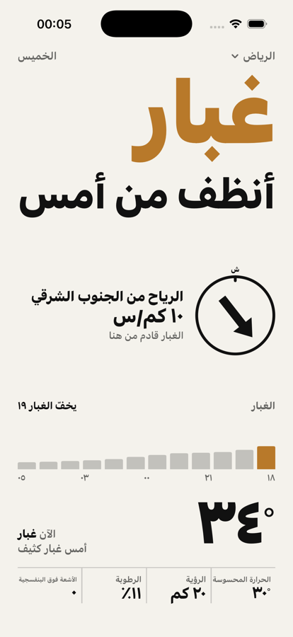

هل الغبار اليوم أسوأ من أمس؟
عجاج تطبيق طقس لدول الخليج يضع الغبار والرياح أولاً. افتح التطبيق وسترى الجواب بخط كبير، وهل هو أسوأ أو أنظف من أمس في نفس الساعة.

صافٍ، غبار خفيف، غبار، غبار كثيف، عاصفة ترابية.
هل هو أسوأ أو أنظف من أمس في نفس الساعة.
متى يبدأ الغبار ومتى يخفّ.
من أي جهة تأتي الريح وبأي قوة.
وجّه هاتفك لتعرف من أين يأتي الغبار فعلاً، وعندما تواجه الريح يهتز الهاتف.
درجة الحرارة والحرارة المحسوسة والرؤية والرطوبة والأشعة فوق البنفسجية.
صُمّم للسعودية والإمارات والكويت وبقية الخليج. يعرض الأرقام بحسب إعدادات جهازك.
مصدر البيانات: Open-Meteo (نماذج CAMS لجودة الهواء وتوقعات الطقس). القيم تقديرية وقد تختلف عن القياس المحلي.